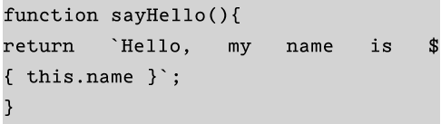
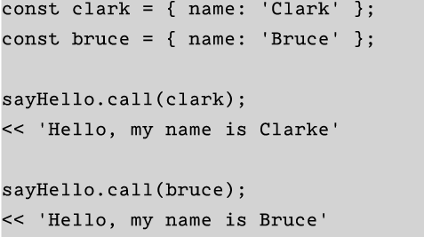
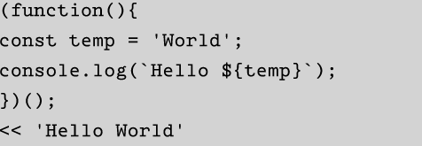
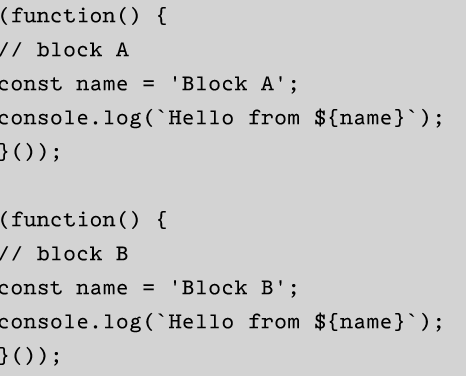

This kind of functions are first-class objects. This kind of functions can pass around in the same way as every other value
This function requires any parameters as the following:
 This are functions that as its name suggests, is invoked as soon as it is defined.
temp constants does not exist after the function has been invoked
The example below shows that a block of code inside its won private scope so it does not interfere with any other part scope so it does not interfere with any other part of the program.
